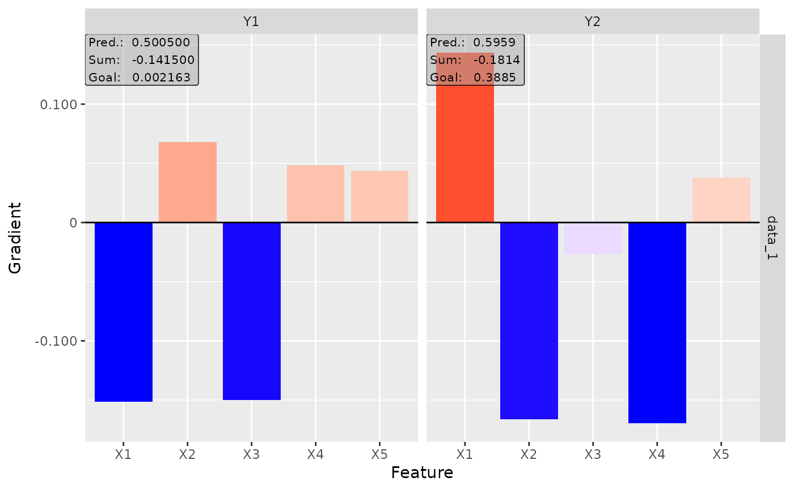
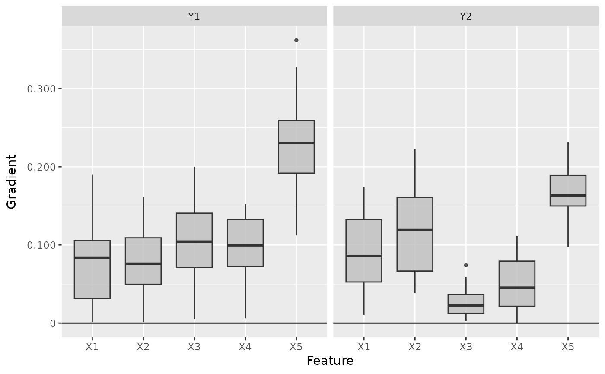
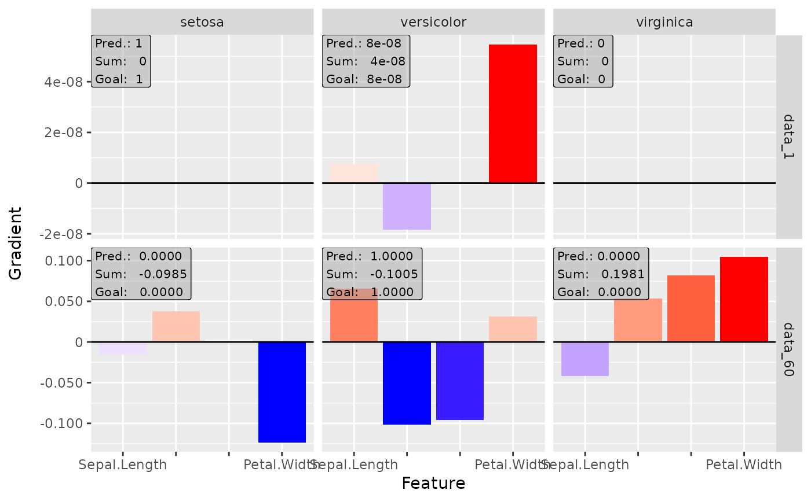
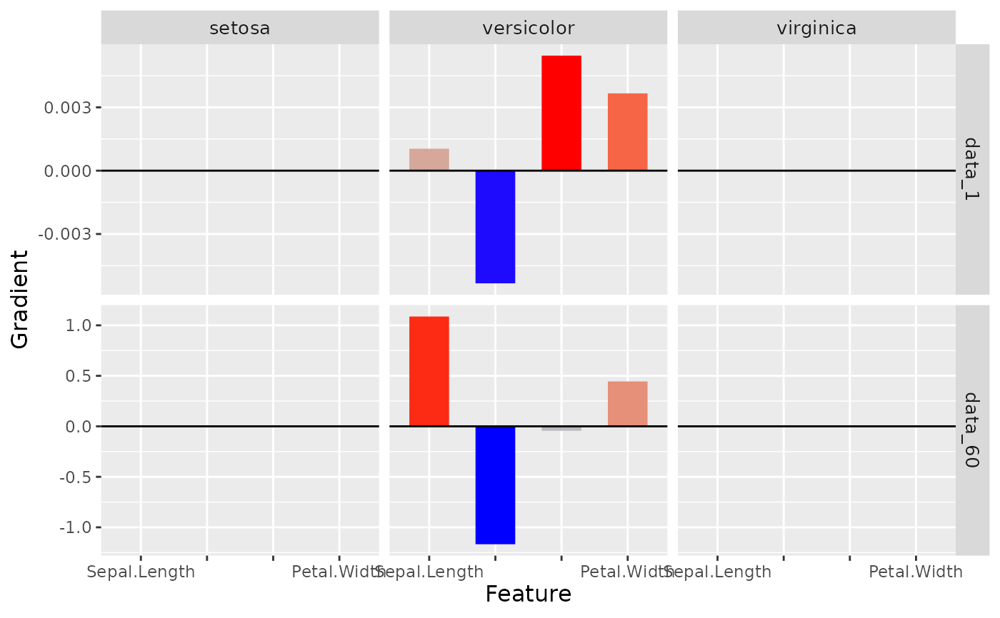

'SmoothGrad' was introduced by D. Smilkov et al. (2017) and is an extension
to the classical Vanilla Gradient method. It takes the mean of the
gradients for n perturbations of each data point, i.e. with
\(\epsilon \sim N(0,\sigma)\)
$$1/n \sum_n d f(x+ \epsilon)_j / d x_j.$$
D. Smilkov et al. (2017) SmoothGrad: removing noise by adding noise. CoRR, abs/1706.03825
innsight::InterpretingMethod -> innsight::GradientBased -> SmoothGrad
nNumber of perturbations of the input data (default: \(50\)).
noise_levelThe standard deviation of the Gaussian
perturbation, i.e. \(\sigma = (max(x) - min(x)) *\) noise_level.
new()Create a new instance of the SmoothGrad method.
SmoothGrad$new( converter, data, channels_first = TRUE, output_idx = NULL, ignore_last_act = TRUE, times_input = FALSE, n = 50, noise_level = 0.1, dtype = "float" )
converterAn instance of the R6 class Converter.
dataThe data for which the smoothed gradients are to be calculated. It has to be an array or array-like format of size (batch_size, dim_in).
channels_firstThe format of the given data, i.e. channels on
last dimension (FALSE) or after the batch dimension (TRUE). If the
data has no channels, use the default value TRUE.
output_idxThis vector determines for which outputs the method
will be applied. By default (NULL), all outputs (but limited to the
first 10) are considered.
ignore_last_actA boolean value to include the last
activation into all the calculations, or not (default: TRUE). In
some cases, the last activation leads to a saturation problem.
times_inputMultiplies the gradients with the input features.
This method is called 'SmoothGrad x Input'. Default: FALSE.
nNumber of perturbations of the input data (default: \(50\)).
noise_levelDetermines the standard deviation of the gaussian
perturbation, i.e. \(\sigma = (max(x) - min(x)) *\) noise_level.
dtypeThe data type for the calculations. Use
either 'float' for torch::torch_float or 'double' for
torch::torch_double.
clone()The objects of this class are cloneable with this method.
SmoothGrad$clone(deep = FALSE)
deepWhether to make a deep clone.
# ------------------------- Example 1: Torch ------------------------------- library(torch) # Create nn_sequential model and data model <- nn_sequential( nn_linear(5, 10), nn_relu(), nn_linear(10, 2), nn_sigmoid() ) data <- torch_randn(25, 5) # Create Converter converter <- Converter$new(model, input_dim = c(5)) # Calculate the smoothed Gradients smoothgrad <- SmoothGrad$new(converter, data) #> Backwardpass 'SmoothGrad': #> | | | 0% | |=================================== | 50% | |======================================================================| 100% # Print the result as a data.frame smoothgrad$get_result("data.frame") #> data feature class value #> 1 data_1 X1 Y1 1.784949e-01 #> 2 data_2 X1 Y1 6.343299e-03 #> 3 data_3 X1 Y1 1.875007e-02 #> 4 data_4 X1 Y1 1.631025e-01 #> 5 data_5 X1 Y1 1.552105e-01 #> 6 data_6 X1 Y1 1.161978e-01 #> 7 data_7 X1 Y1 2.859886e-03 #> 8 data_8 X1 Y1 1.361366e-01 #> 9 data_9 X1 Y1 1.604341e-01 #> 10 data_10 X1 Y1 4.903207e-02 #> 11 data_11 X1 Y1 5.218570e-02 #> 12 data_12 X1 Y1 6.142798e-02 #> 13 data_13 X1 Y1 5.972859e-02 #> 14 data_14 X1 Y1 1.277714e-01 #> 15 data_15 X1 Y1 1.495420e-01 #> 16 data_16 X1 Y1 1.192918e-01 #> 17 data_17 X1 Y1 3.495150e-02 #> 18 data_18 X1 Y1 4.188213e-03 #> 19 data_19 X1 Y1 1.313149e-01 #> 20 data_20 X1 Y1 8.307973e-02 #> 21 data_21 X1 Y1 1.961173e-01 #> 22 data_22 X1 Y1 6.506011e-02 #> 23 data_23 X1 Y1 6.641524e-02 #> 24 data_24 X1 Y1 5.263995e-02 #> 25 data_25 X1 Y1 6.062567e-04 #> 26 data_1 X2 Y1 -1.240568e-01 #> 27 data_2 X2 Y1 -9.859808e-02 #> 28 data_3 X2 Y1 6.824082e-02 #> 29 data_4 X2 Y1 -1.732234e-01 #> 30 data_5 X2 Y1 -1.405256e-01 #> 31 data_6 X2 Y1 -1.749531e-01 #> 32 data_7 X2 Y1 5.948525e-02 #> 33 data_8 X2 Y1 -1.042212e-01 #> 34 data_9 X2 Y1 -2.443058e-01 #> 35 data_10 X2 Y1 -2.502126e-02 #> 36 data_11 X2 Y1 3.896733e-02 #> 37 data_12 X2 Y1 1.135634e-02 #> 38 data_13 X2 Y1 -8.978935e-02 #> 39 data_14 X2 Y1 -4.749107e-02 #> 40 data_15 X2 Y1 -4.802022e-02 #> 41 data_16 X2 Y1 -1.705497e-01 #> 42 data_17 X2 Y1 7.585133e-02 #> 43 data_18 X2 Y1 -9.521174e-02 #> 44 data_19 X2 Y1 -1.181759e-02 #> 45 data_20 X2 Y1 -2.627633e-03 #> 46 data_21 X2 Y1 -2.029604e-01 #> 47 data_22 X2 Y1 5.360097e-06 #> 48 data_23 X2 Y1 -2.152330e-02 #> 49 data_24 X2 Y1 7.461444e-02 #> 50 data_25 X2 Y1 4.368569e-02 #> 51 data_1 X3 Y1 -2.299560e-01 #> 52 data_2 X3 Y1 -9.921408e-02 #> 53 data_3 X3 Y1 -3.206012e-01 #> 54 data_4 X3 Y1 -1.599326e-01 #> 55 data_5 X3 Y1 -9.677822e-02 #> 56 data_6 X3 Y1 -9.967191e-02 #> 57 data_7 X3 Y1 -3.245015e-01 #> 58 data_8 X3 Y1 -2.525643e-01 #> 59 data_9 X3 Y1 -1.062988e-01 #> 60 data_10 X3 Y1 -2.861376e-01 #> 61 data_11 X3 Y1 -2.578872e-01 #> 62 data_12 X3 Y1 -3.461477e-01 #> 63 data_13 X3 Y1 -2.664238e-01 #> 64 data_14 X3 Y1 -3.166073e-01 #> 65 data_15 X3 Y1 -3.047517e-01 #> 66 data_16 X3 Y1 -9.796089e-02 #> 67 data_17 X3 Y1 -2.393887e-01 #> 68 data_18 X3 Y1 -9.802376e-02 #> 69 data_19 X3 Y1 -2.482690e-01 #> 70 data_20 X3 Y1 -3.522099e-01 #> 71 data_21 X3 Y1 -1.785300e-01 #> 72 data_22 X3 Y1 -3.550190e-01 #> 73 data_23 X3 Y1 -3.443036e-01 #> 74 data_24 X3 Y1 -2.915981e-01 #> 75 data_25 X3 Y1 -3.186536e-01 #> 76 data_1 X4 Y1 4.253551e-02 #> 77 data_2 X4 Y1 -4.894516e-02 #> 78 data_3 X4 Y1 6.267736e-02 #> 79 data_4 X4 Y1 8.974864e-02 #> 80 data_5 X4 Y1 1.315176e-01 #> 81 data_6 X4 Y1 -5.081291e-02 #> 82 data_7 X4 Y1 3.225254e-02 #> 83 data_8 X4 Y1 4.031713e-02 #> 84 data_9 X4 Y1 5.341690e-02 #> 85 data_10 X4 Y1 6.777212e-02 #> 86 data_11 X4 Y1 1.551315e-01 #> 87 data_12 X4 Y1 1.644374e-01 #> 88 data_13 X4 Y1 8.919276e-02 #> 89 data_14 X4 Y1 8.055574e-02 #> 90 data_15 X4 Y1 1.148178e-01 #> 91 data_16 X4 Y1 4.569496e-02 #> 92 data_17 X4 Y1 1.329816e-01 #> 93 data_18 X4 Y1 -4.729160e-02 #> 94 data_19 X4 Y1 1.802391e-01 #> 95 data_20 X4 Y1 1.303655e-01 #> 96 data_21 X4 Y1 8.584110e-02 #> 97 data_22 X4 Y1 9.485441e-02 #> 98 data_23 X4 Y1 1.351393e-01 #> 99 data_24 X4 Y1 1.841698e-01 #> 100 data_25 X4 Y1 4.465156e-02 #> 101 data_1 X5 Y1 -1.485742e-01 #> 102 data_2 X5 Y1 -2.037360e-02 #> 103 data_3 X5 Y1 -1.273096e-01 #> 104 data_4 X5 Y1 -1.038000e-01 #> 105 data_5 X5 Y1 -1.010152e-01 #> 106 data_6 X5 Y1 -8.715706e-02 #> 107 data_7 X5 Y1 -1.032476e-01 #> 108 data_8 X5 Y1 -1.739157e-01 #> 109 data_9 X5 Y1 -8.463272e-02 #> 110 data_10 X5 Y1 -1.522728e-01 #> 111 data_11 X5 Y1 -2.325746e-01 #> 112 data_12 X5 Y1 -2.183924e-01 #> 113 data_13 X5 Y1 -1.891599e-01 #> 114 data_14 X5 Y1 -1.612641e-01 #> 115 data_15 X5 Y1 -1.828481e-01 #> 116 data_16 X5 Y1 -7.257807e-02 #> 117 data_17 X5 Y1 -1.285454e-01 #> 118 data_18 X5 Y1 -2.679933e-02 #> 119 data_19 X5 Y1 -1.252380e-01 #> 120 data_20 X5 Y1 -2.395522e-01 #> 121 data_21 X5 Y1 -1.131610e-01 #> 122 data_22 X5 Y1 -2.222959e-01 #> 123 data_23 X5 Y1 -2.032340e-01 #> 124 data_24 X5 Y1 -1.976938e-01 #> 125 data_25 X5 Y1 -9.258443e-02 #> 126 data_1 X1 Y2 5.286802e-02 #> 127 data_2 X1 Y2 1.052190e-01 #> 128 data_3 X1 Y2 -2.972120e-02 #> 129 data_4 X1 Y2 6.349173e-02 #> 130 data_5 X1 Y2 7.637187e-02 #> 131 data_6 X1 Y2 1.074882e-01 #> 132 data_7 X1 Y2 -2.827225e-02 #> 133 data_8 X1 Y2 7.071105e-02 #> 134 data_9 X1 Y2 1.069146e-01 #> 135 data_10 X1 Y2 3.250967e-02 #> 136 data_11 X1 Y2 8.107380e-02 #> 137 data_12 X1 Y2 4.988231e-02 #> 138 data_13 X1 Y2 1.070367e-01 #> 139 data_14 X1 Y2 2.224830e-02 #> 140 data_15 X1 Y2 4.288638e-02 #> 141 data_16 X1 Y2 8.892415e-02 #> 142 data_17 X1 Y2 -3.841309e-02 #> 143 data_18 X1 Y2 8.594034e-02 #> 144 data_19 X1 Y2 2.440199e-03 #> 145 data_20 X1 Y2 7.778928e-02 #> 146 data_21 X1 Y2 5.873831e-02 #> 147 data_22 X1 Y2 3.817612e-02 #> 148 data_23 X1 Y2 6.145263e-02 #> 149 data_24 X1 Y2 4.601355e-02 #> 150 data_25 X1 Y2 -3.114270e-02 #> 151 data_1 X2 Y2 -2.135376e-01 #> 152 data_2 X2 Y2 -1.199684e-01 #> 153 data_3 X2 Y2 -2.138390e-01 #> 154 data_4 X2 Y2 -1.630182e-01 #> 155 data_5 X2 Y2 -8.586586e-02 #> 156 data_6 X2 Y2 -9.301788e-02 #> 157 data_7 X2 Y2 -2.200167e-01 #> 158 data_8 X2 Y2 -2.179002e-01 #> 159 data_9 X2 Y2 -1.124084e-01 #> 160 data_10 X2 Y2 -1.960697e-01 #> 161 data_11 X2 Y2 -1.367085e-01 #> 162 data_12 X2 Y2 -2.433301e-01 #> 163 data_13 X2 Y2 -1.946880e-01 #> 164 data_14 X2 Y2 -2.293124e-01 #> 165 data_15 X2 Y2 -2.211201e-01 #> 166 data_16 X2 Y2 -1.001489e-01 #> 167 data_17 X2 Y2 -1.295090e-01 #> 168 data_18 X2 Y2 -1.071294e-01 #> 169 data_19 X2 Y2 -1.662345e-01 #> 170 data_20 X2 Y2 -2.604407e-01 #> 171 data_21 X2 Y2 -2.053680e-01 #> 172 data_22 X2 Y2 -2.522068e-01 #> 173 data_23 X2 Y2 -2.586900e-01 #> 174 data_24 X2 Y2 -1.897379e-01 #> 175 data_25 X2 Y2 -2.138241e-01 #> 176 data_1 X3 Y2 3.603023e-02 #> 177 data_2 X3 Y2 -9.293722e-02 #> 178 data_3 X3 Y2 1.163986e-01 #> 179 data_4 X3 Y2 -1.416951e-02 #> 180 data_5 X3 Y2 1.361152e-02 #> 181 data_6 X3 Y2 -9.436774e-02 #> 182 data_7 X3 Y2 8.804426e-02 #> 183 data_8 X3 Y2 -1.153322e-02 #> 184 data_9 X3 Y2 -1.052680e-01 #> 185 data_10 X3 Y2 1.828811e-02 #> 186 data_11 X3 Y2 1.162062e-01 #> 187 data_12 X3 Y2 1.075060e-01 #> 188 data_13 X3 Y2 -4.717053e-02 #> 189 data_14 X3 Y2 1.170877e-01 #> 190 data_15 X3 Y2 1.536685e-01 #> 191 data_16 X3 Y2 -4.350312e-02 #> 192 data_17 X3 Y2 1.535996e-01 #> 193 data_18 X3 Y2 -1.108765e-01 #> 194 data_19 X3 Y2 2.130975e-01 #> 195 data_20 X3 Y2 1.114229e-01 #> 196 data_21 X3 Y2 -3.783171e-02 #> 197 data_22 X3 Y2 5.476730e-02 #> 198 data_23 X3 Y2 6.262707e-02 #> 199 data_24 X3 Y2 2.198695e-01 #> 200 data_25 X3 Y2 6.457052e-02 #> 201 data_1 X4 Y2 -2.543934e-01 #> 202 data_2 X4 Y2 -7.520300e-02 #> 203 data_3 X4 Y2 -1.961153e-01 #> 204 data_4 X4 Y2 -1.415302e-01 #> 205 data_5 X4 Y2 -1.180926e-01 #> 206 data_6 X4 Y2 -1.423318e-01 #> 207 data_7 X4 Y2 -2.007446e-01 #> 208 data_8 X4 Y2 -2.657102e-01 #> 209 data_9 X4 Y2 -1.162619e-01 #> 210 data_10 X4 Y2 -1.647293e-01 #> 211 data_11 X4 Y2 -1.895056e-01 #> 212 data_12 X4 Y2 -2.142271e-01 #> 213 data_13 X4 Y2 -1.626539e-01 #> 214 data_14 X4 Y2 -1.880451e-01 #> 215 data_15 X4 Y2 -1.997396e-01 #> 216 data_16 X4 Y2 -5.229546e-02 #> 217 data_17 X4 Y2 -9.877156e-02 #> 218 data_18 X4 Y2 -9.374720e-02 #> 219 data_19 X4 Y2 -6.725771e-02 #> 220 data_20 X4 Y2 -2.612393e-01 #> 221 data_21 X4 Y2 -2.297434e-01 #> 222 data_22 X4 Y2 -3.091406e-01 #> 223 data_23 X4 Y2 -2.042458e-01 #> 224 data_24 X4 Y2 -9.658451e-02 #> 225 data_25 X4 Y2 -1.673940e-01 #> 226 data_1 X5 Y2 -1.018282e-01 #> 227 data_2 X5 Y2 -1.770060e-03 #> 228 data_3 X5 Y2 1.204353e-02 #> 229 data_4 X5 Y2 -3.166181e-02 #> 230 data_5 X5 Y2 2.630471e-03 #> 231 data_6 X5 Y2 -7.972519e-02 #> 232 data_7 X5 Y2 1.578643e-02 #> 233 data_8 X5 Y2 -6.489228e-02 #> 234 data_9 X5 Y2 -1.833824e-02 #> 235 data_10 X5 Y2 -9.898305e-04 #> 236 data_11 X5 Y2 4.119308e-02 #> 237 data_12 X5 Y2 5.432380e-02 #> 238 data_13 X5 Y2 2.189150e-02 #> 239 data_14 X5 Y2 -6.891979e-02 #> 240 data_15 X5 Y2 -6.948403e-02 #> 241 data_16 X5 Y2 -3.382802e-02 #> 242 data_17 X5 Y2 2.393446e-02 #> 243 data_18 X5 Y2 1.707368e-02 #> 244 data_19 X5 Y2 -3.073366e-02 #> 245 data_20 X5 Y2 6.593147e-03 #> 246 data_21 X5 Y2 -1.963496e-02 #> 247 data_22 X5 Y2 3.200577e-02 #> 248 data_23 X5 Y2 2.714188e-02 #> 249 data_24 X5 Y2 1.486672e-02 #> 250 data_25 X5 Y2 2.239345e-02 # Plot the result for both classes plot(smoothgrad, output_idx = 1:2)  # Plot the boxplot of all datapoints boxplot(smoothgrad, output_idx = 1:2)  # ------------------------- Example 2: Neuralnet --------------------------- library(neuralnet) data(iris) # Train a neural network nn <- neuralnet(Species ~ ., iris, linear.output = FALSE, hidden = c(10, 5), act.fct = "logistic", rep = 1 ) # Convert the trained model converter <- Converter$new(nn) # Calculate the smoothed gradients smoothgrad <- SmoothGrad$new(converter, iris[, -5], times_input = FALSE) #> Backwardpass 'SmoothGrad': #> | | | 0% | |======================= | 33% | |=============================================== | 67% | |======================================================================| 100% # Plot the result for the first and 60th data point and all classes plot(smoothgrad, data_idx = c(1, 60), output_idx = 1:3)  # Calculate SmoothGrad x Input and do not ignore the last activation smoothgrad <- SmoothGrad$new(converter, iris[, -5], ignore_last_act = FALSE) #> Backwardpass 'SmoothGrad': #> | | | 0% | |======================= | 33% | |=============================================== | 67% | |======================================================================| 100% # Plot the result again plot(smoothgrad, data_idx = c(1, 60), output_idx = 1:3)  # ------------------------- Example 3: Keras ------------------------------- library(keras) if (is_keras_available()) { data <- array(rnorm(64 * 60 * 3), dim = c(64, 60, 3)) model <- keras_model_sequential() model %>% layer_conv_1d( input_shape = c(60, 3), kernel_size = 8, filters = 8, activation = "softplus", padding = "valid" ) %>% layer_conv_1d( kernel_size = 8, filters = 4, activation = "tanh", padding = "same" ) %>% layer_conv_1d( kernel_size = 4, filters = 2, activation = "relu", padding = "valid" ) %>% layer_flatten() %>% layer_dense(units = 64, activation = "relu") %>% layer_dense(units = 16, activation = "relu") %>% layer_dense(units = 3, activation = "softmax") # Convert the model converter <- Converter$new(model) # Apply the SmoothGrad method smoothgrad <- SmoothGrad$new(converter, data, channels_first = FALSE) # Plot the result for the first datapoint and all classes plot(smoothgrad, output_idx = 1:3) # Plot the result as boxplots for first two classes boxplot(smoothgrad, output_idx = 1:2) # You can also create an interactive plot with plotly. # This is a suggested package, so make sure that it is installed library(plotly) # Result as boxplots boxplot(smoothgrad, as_plotly = TRUE) # Result of the second data point plot(smoothgrad, data_idx = 2, as_plotly = TRUE) } #> Backwardpass 'SmoothGrad': #> | | | 0% | |======================= | 33% | |=============================================== | 67% | |======================================================================| 100% # ------------------------- Advanced: Plotly ------------------------------- # If you want to create an interactive plot of your results with custom # changes, you can take use of the method plotly::ggplotly library(ggplot2) library(plotly) library(neuralnet) data(iris) nn <- neuralnet(Species ~ ., iris, linear.output = FALSE, hidden = c(10, 8), act.fct = "tanh", rep = 1, threshold = 0.5 ) # create an converter for this model converter <- Converter$new(nn) # create new instance of 'SmoothGrad' smoothgrad <- SmoothGrad$new(converter, iris[, -5]) #> Backwardpass 'SmoothGrad': #> | | | 0% | |======================= | 33% | |=============================================== | 67% | |======================================================================| 100% library(plotly) # Get the ggplot and add your changes p <- plot(smoothgrad, output_idx = 1, data_idx = 1:2) + theme_bw() + scale_fill_gradient2(low = "green", mid = "black", high = "blue") #> Scale for 'fill' is already present. Adding another scale for 'fill', which #> will replace the existing scale. # Now apply the method plotly::ggplotly with argument tooltip = "text" plotly::ggplotly(p, tooltip = "text")